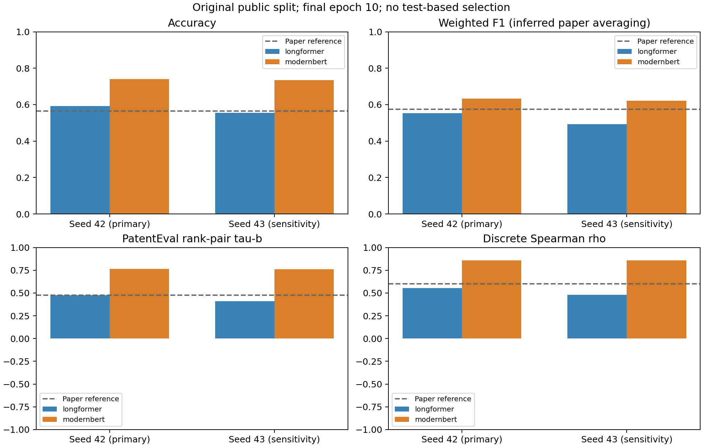

ModernBERT-base 替換 Longformer 的訓練比較
完成時間（台北）：2026-11-09T10:58:09.365442+08:00。範圍：英文請求項整體品質 Quality；原始公開切分。
實際結論
主要 seed42：Accuracy、Weighted F1、PatentEval rank-pair τ-b、離散 Spearman ρ點估計提高；Accuracy、PatentEval rank-pair τ-b、離散 Spearman ρ群組bootstrap區間全高於0；Weighted F1尚無明確方向證據（區間含0或有效抽樣不足）。
敏感度 seed43：Accuracy、Weighted F1、PatentEval rank-pair τ-b、離散 Spearman ρ點估計提高；Accuracy、Weighted F1、PatentEval rank-pair τ-b、離散 Spearman ρ群組bootstrap區間全高於0。
主要比較固定為 seed42 的第10輪 ModernBERT 減去上一輪同種子的 Longformer；seed43 是預先指定的敏感度補充。沒有根據 test 選種子、輪數、平手門檻或最佳指標。
上一輪 Longformer 的 Accuracy 高於論文，但 F1 與 Spearman 較低；這不代表已全面超越或精確重現論文。本報告逐項呈現實際差值及群組 bootstrap 區間。
相同資料與訓練規則
直接逐位元組沿用前輪 dataset 與 split：939訓練、105驗證、184測試，共20種參考請求項。兩模型均全參數微調、FP32、每批4筆比較、10輪、AdamW lr=5e-6、weight decay=.01、m=.1、n=.01；無scheduler/warmup/梯度裁切。最長4096 tokens，原生tokenizer文字配對、動態padding至512倍數；本輪沒有截斷原文。
Longformer保留既有預訓練pooler；ModernBERT沒有該層，因此新增768→768 Dense+Tanh，再接Linear→Sigmoid，pooler以N(0,.02)/zero初始化。評分頭結構等價，但初始化來源不同；結果評估的是實際替換方案，不能只歸因於純架構。
ModernBERT使用固定revision 8949b909ec900327062f0ebf497f51aef5e6f0c8、Transformers4.50.3、SDPA優先且reference_compile=False；實際預檢選用 sdpa。前輪Longformer訓練為4.46.2，新環境已對其四checkpoint重評估，全部分數誤差≤1e-6、分類完全一致；這是推論相容性檢查，不能消除訓練SDK版本差異。
主要與敏感度結果：固定第10輪
| 固定條件 | Accuracy | Weighted F1 | Rank-pair τ-b | 離散 Spearman ρ | 訓練分鐘 | 峰值 GiB |
|---|
| 論文文獻參考 | 56.50% | 57.40%* | 0.4770 | 0.6020 | — | — |
| longformer · seed 42 · final (epoch 10) | 59.24% | 55.39% | 0.4746 | 0.5544 | 88.1 | 5.83 |
| longformer · seed 43 · final (epoch 10) | 55.43% | 49.23% | 0.4085 | 0.4785 | 88.5 | 5.83 |
| modernbert · seed 42 · final (epoch 10) | 73.91% | 63.36% | 0.7653 | 0.8589 | 86.5 | 3.94 |
| modernbert · seed 43 · final (epoch 10) | 73.37% | 62.10% | 0.7612 | 0.8566 | 87.3 | 3.93 |
*論文未明載F1 averaging，本輪採六個baseline共同支持的weighted口徑。τ依引用PatentEval的rank-pair展平τ-b；ρ為固定三分類偏好與人類標籤的Spearman。平手嚴格採abs(delta)<1e-4。所有四欄均來自同一條件的同一組預測。

ModernBERT−Longformer 的成對差值
各seed分開，以20個參考原文SHA群組配對重抽10000次（seed42），每次抽整群的全部比較並重新計算全域指標，取2.5%與97.5%百分位。Accuracy/F1差值使用0～1尺度，乘100為百分點。若undefined抽樣使有效比例<95%，不作方向性推論；區間跨0表示尚無明確方向證據。
| Seed | 指標 | 點差值 | 95%區間 | 有效抽樣 | 判讀 |
|---|
| 42 | Accuracy | 0.1467 | [0.0577, 0.2574] | 10000/10000 | 此固定種子有正向差異證據 |
| 42 | Weighted F1 | 0.0797 | [-0.0113, 0.1897] | 10000/10000 | 區間含0，尚無明確方向證據 |
| 42 | PatentEval rank-pair τ-b | 0.2907 | [0.1286, 0.4870] | 10000/10000 | 此固定種子有正向差異證據 |
| 42 | 離散 Spearman ρ | 0.3045 | [0.1351, 0.5154] | 10000/10000 | 此固定種子有正向差異證據 |
| 43 | Accuracy | 0.1793 | [0.1042, 0.2774] | 10000/10000 | 此固定種子有正向差異證據 |
| 43 | Weighted F1 | 0.1287 | [0.0614, 0.2197] | 10000/10000 | 此固定種子有正向差異證據 |
| 43 | PatentEval rank-pair τ-b | 0.3527 | [0.2099, 0.5374] | 10000/10000 | 此固定種子有正向差異證據 |
| 43 | 離散 Spearman ρ | 0.3781 | [0.2237, 0.5771] | 10000/10000 | 此固定種子有正向差異證據 |
這些區間衡量本資料群組重抽的不確定性，兩個seed沒有合併成368筆獨立樣本。只有兩個種子，不能據此聲稱跨種子穩定改善。
驗證集選模補充
以下僅依最低驗證loss選擇，同分較早輪；不替代主要第10輪。時間與峰值顯存均為該種子完整10輪訓練的run值，並非只訓練到補充權重所在輪數的耗時。
| 固定條件 | Accuracy | Weighted F1 | Rank-pair τ-b | 離散 Spearman ρ | 訓練分鐘 | 峰值 GiB |
|---|
| longformer · seed 42 · validation_best (epoch 10) | 59.24% | 55.39% | 0.4746 | 0.5544 | 88.1 | 5.83 |
| longformer · seed 43 · validation_best (epoch 10) | 55.43% | 49.23% | 0.4085 | 0.4785 | 88.5 | 5.83 |
| modernbert · seed 42 · validation_best (epoch 10) | 73.91% | 63.36% | 0.7653 | 0.8589 | 86.5 | 3.94 |
| modernbert · seed 43 · validation_best (epoch 10) | 73.37% | 62.10% | 0.7612 | 0.8566 | 87.3 | 3.93 |
平手辨識與分類診斷
四項主要指標提高，不代表平手類別也改善。下表分開顯示原始49筆人類平手與135筆勝負比較；門檻仍固定為1e-4。本輪ModernBERT對勝負排序表現較強，對平手的召回仍偏低，應與主要數字一起解讀。
| 第10輪條件 | Macro F1 | 平手 recall | 平手判對／總數 | 非平手判對／總數 |
|---|
| longformer · seed 42 | 52.17% | 14.29% | 7/49 | 102/135 |
| longformer · seed 43 | 45.34% | 4.08% | 2/49 | 100/135 |
| modernbert · seed 42 | 57.94% | 2.04% | 1/49 | 135/135 |
| modernbert · seed 43 | 56.43% | 0.00% | 0/49 | 135/135 |
平手recall差值與其群組bootstrap區間也保留於完整統計JSON；此診斷沒有改動分類門檻、權重選擇或任何原始預測。
限制與驗證
原始公開train/test的20個參考群組及全部測試候選內容均有重疊，為對照前輪而保留；這不是未見專利的泛化測試。之前按參考群組分開的五折實驗另存，不能與此輪數字直接混用。只有Quality公開標註；不能外推到其他四維度或中文請求項。margin、seed等未公布設定沿用前輪預設，沒有藉此聲稱重現作者完整protocol。
已檢查原始資料/分割雜湊、八組184筆預測順序與標籤、兩種子各10輪、八份正式checkpoint完整性、固定分類規則及獨立混淆矩陣統計。新模型先通過最長實際輸入的真FP32 batch4前向/反向/更新及存取權重一致性。
完整統計與設定JSON · 比較表CSV · 逐筆預測CSV · 執行驗證 · 檔案雜湊 · 向量圖